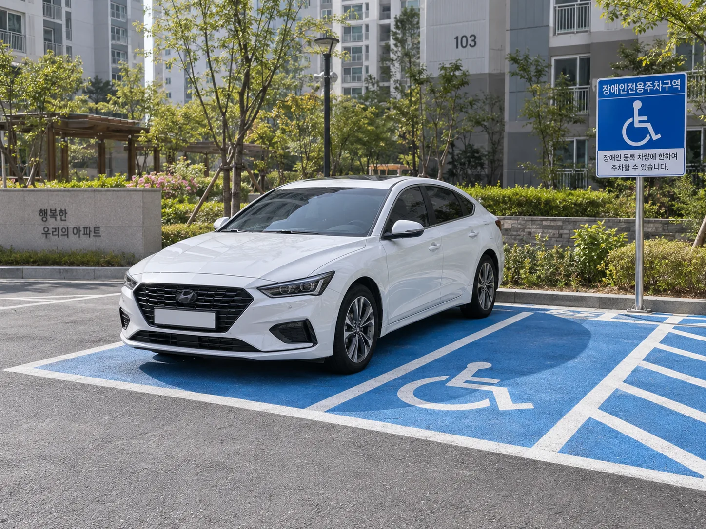
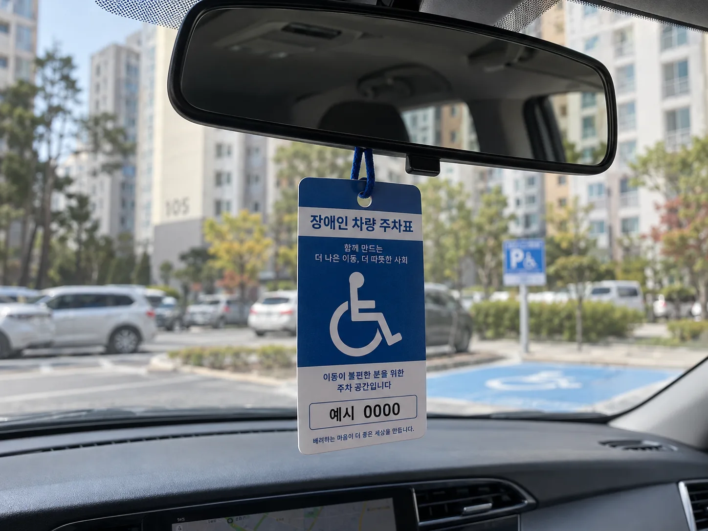
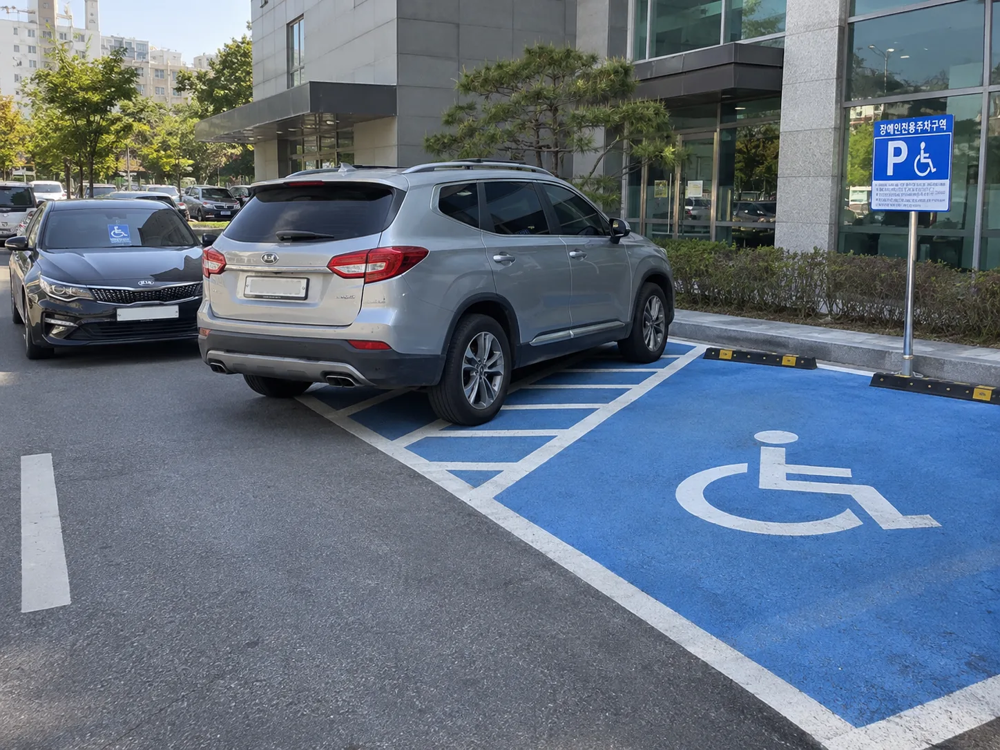
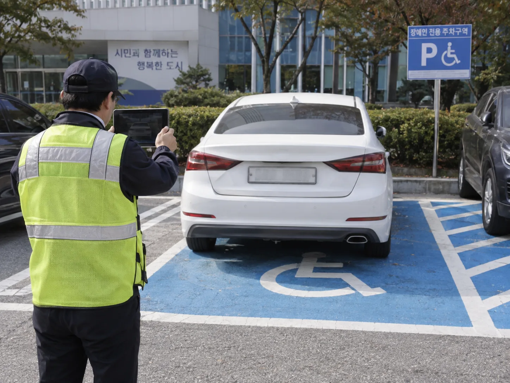

▲ 장애인전용주차구역은 노면표시와 표지판이 있어도 '표지 부착 + 보행상 장애인 탑승'이라는 두 조건을 동시에 충족해야 적법하게 이용할 수 있다
1. 표지도 없이 그냥 세웠다면? — 가장 흔한 위반, 과태료 10만원
아파트 단지든 대형마트든, 바닥에 파란 휠체어 마크가 칠해진 자리에 장애인사용자동차 표지 없이 주차하면 과태료 10만원이 부과됩니다. "잠깐인데 괜찮겠지"라는 생각으로 정차만 해도 단속 대상입니다. 보건복지부가 배포한 단속 기준에 따르면 이는 「장애인·노인·임산부 등의 편의증진 보장에 관한 법률」 제17조제5항과 같은 법 시행령 제13조 및 별표3에 근거한 처분으로, 표지 유무를 육안 또는 사진으로 확인하는 것이 1차 단속 기준입니다.
📍 단속 대상은 아파트 단지도 예외가 아니다
많은 운전자가 "우리 단지 안인데 누가 단속하겠어"라고 생각하지만, 「교통약자의 이동편의증진법」상 설치 의무가 있는 장애인전용주차구역이라면 아파트 단지 내부 주차장도 전부 단속 대상입니다. 지자체가 직접 순찰하거나 입주민 신고를 받아 과태료를 부과하는 사례가 실제로 많습니다.
2. 표지는 붙어 있는데 정작 장애인이 안 탔다면? — 똑같이 10만원
여기서부터 실수하는 사람이 많습니다. 표지가 붙어 있어도 보행상 장애가 있는 당사자가 그 차량에 타고 있지 않다면 위반입니다. 배우자나 자녀가 부모님 차의 장애인 표지를 붙인 채로 혼자 마트에 다녀오는 경우가 대표적인 사례입니다. 이 경우도 표지 미부착과 똑같이 과태료 10만원이 부과되며, 심지어 일시 정차조차 허용되지 않습니다. "5분만 세워두고 얼른 나올게"가 통하지 않는다는 뜻입니다.

▲ 장애인사용자동차 표지는 보행상 장애가 있는 사람이 실제로 탑승했을 때만 효력이 있다. 표지만 걸어두고 혼자 운전한 경우도 단속 대상이다 ⓒ 카프리즘
3. 주차선은 지켰는데 진입로를 막았다면? — 과태료 50만원, 가장 무겁다
구역 안에 정확히 주차했더라도 그 구역의 진입로나 통행로를 다른 차량으로 가로막아 이용 자체를 방해하면 과태료 50만원이 부과됩니다. 흔히 말하는 '얌체 이중주차'가 여기 해당합니다. 정책브리핑이 안내하는 단속 기준을 보면 다음과 같은 행위들이 모두 방해행위로 분류됩니다.
| 유형 | 구체적 사례 |
|---|---|
| 진입로 점유 | 구역 앞뒤 또는 진입로에 다른 차량을 가로로 세워 진입 자체를 막는 경우 |
| 이중(평행)주차 | 이미 주차된 차량 옆이나 뒤에 겹쳐 세워 출차를 못 하게 하는 경우 |
| 물건 적치 | 구역 안이나 통행로에 화분, 카트, 자재 등을 쌓아두는 경우 |
| 표시 훼손 | 바닥 노면표시나 표지판을 가리거나 훼손하는 경우 |
장애인전용주차구역은 일반 주차구역보다 폭이 넓게 설계되는데, 이는 휠체어 리프트나 슬로프를 펼치기 위한 공간이기 때문입니다. 옆 칸에 바짝 붙여 이중주차하면 주차선 위반이 아니어도 이용 자체가 불가능해지므로 방해행위로 처벌됩니다.

▲ 주차 구역 안이 아니라 진입로를 막아도 '주차 방해행위'로 과태료 50만원이 부과된다 ⓒ 카프리즘
4. 표지를 빌리거나 위조해서 붙였다면? — 최대 200만원, 형사처벌까지
가장 무거운 처분은 표지 자체를 부정하게 쓰는 경우입니다. 장애인 본인이 사망했는데 표지를 반납하지 않고 계속 쓰거나, 다른 사람에게 표지를 빌려주거나 양도하는 경우, 차량번호가 표지와 일치하지 않는 경우 등은 「장애인복지법」 제39조에 따라 최대 200만원의 과태료가 부과됩니다. 고의가 없었다고 주장해도 부당사용 사실 자체로 처분 대상이 됩니다.
✅ 이건 과태료로 끝나지 않는다
· 표지를 위조하거나 변조한 경우 공문서위조 및 위조공문서행사죄가 적용돼 10년 이하의 징역에 처해질 수 있습니다
· 장애인과 보호자의 주민등록상 주소가 분리되면 '보호자 운전용' 표지 자체가 무효화되는 경우가 있어, 이사·전입신고 후에는 표지 재확인이 필요합니다
· 실제로 2025년 고양시 등 여러 지자체가 부당사용 적발 시 최대 200만원을 부과한 사례를 공개적으로 안내하고 있습니다
5. 내가 받은 표지가 '주차가능'인지 헷갈린다면? — 표지 종류부터 확인하자
장애인사용자동차 표지는 전부 똑같지 않습니다. 보행상 장애 여부에 따라 두 종류로 나뉘고, 이 중 장애인전용주차구역을 실제로 이용할 수 있는 것은 '주차가능' 표지뿐입니다.
| 구분 | 발급 기준 | 장애인전용주차구역 이용 |
|---|---|---|
| 주차가능 표지 | 「장애정도판정기준」의 '장애유형별 보행상 장애 표준기준표'에 해당하는 경우 | 가능 (보행상 장애인 탑승 시) |
| 주차불가 표지 | 장애가 있으나 위 표준기준표에는 해당하지 않는 경우 | 불가능 — 일반 장애인 관련 할인·감면 용도로만 사용 |
여기에 더해 표지는 운전자 명의로도 나뉩니다. 장애인 본인이 운전하면 '본인 운전용'이 원칙이지만, 미성년자이거나 운전면허가 없는 등의 사유로 본인이 운전할 수 없는 경우 보호자 명의 차량에 '보호자 운전용' 표지가 발급됩니다. 즉 표지 색이나 모양만 보고 '어차피 장애인 표지니까 되겠지'라고 판단하면 안 되고, 본인이 받은 표지가 주차가능형인지, 명의 구분이 맞는지를 먼저 확인해야 합니다. 본인 표지 종류나 재발급 여부는 아래에서 확인할 수 있습니다.
장애인사용자동차 등 표지 발급·재발급 절차는 아래에서 확인할 수 있습니다. 찾기쉬운 생활법령정보에서 확인
6. 목격했다면 어떻게 신고할까 — 과태료는 지자체가 부과한다
장애인전용주차구역 위반은 경찰이 아니라 각 지방자치단체(시·군·구)가 과태료 부과 주체입니다. 스마트폰 앱 '안전신문고'나 지자체 홈페이지·전화로 위반 차량 사진과 위치, 시간을 신고하면 조사 후 과태료가 부과됩니다. 아파트 단지 내부라 하더라도 관리사무소가 아니라 관할 구청 장애인복지 담당 부서가 최종 처분 권한을 갖습니다.
실제 신고 절차는 생각보다 까다롭지 않습니다. 안전신문고 앱을 설치하고 본인 인증으로 로그인한 뒤 '불법 주정차' 메뉴에서 '장애인 전용구역' 항목을 선택하면 됩니다. 핵심은 동일한 위반 차량을 최소 1분 간격을 두고 사진 2장을 촬영해야 한다는 점으로, 차량이 같은 자리에 계속 정차해 있다는 사실을 입증하기 위한 절차입니다. 두 사진 모두 차량 번호판과 촬영 시각이 선명하게 나와야 하며, 이 조건이 충족되지 않으면 신고가 반려될 수 있습니다. 위치 정보는 앱이 자동으로 잡아주고, 신고 내용은 5자 이상 900자 이내로 상황을 간단히 적으면 됩니다. 다만 신고에 따른 별도의 포상금은 지급되지 않습니다. 쓰레기 불법투기 등 일부 분야와 달리 장애인전용주차구역 위반 신고는 공익 제보의 성격으로 운영되며, 다만 행정안전부가 우수 신고 사례를 선정해 표창·포상하는 이벤트를 비정기적으로 진행하는 경우는 있습니다.

▲ 장애인전용주차구역 과태료는 경찰이 아닌 지방자치단체가 부과하며, 안전신문고 등을 통한 시민 신고로도 단속이 이뤄진다 ⓒ 카프리즘
📍 위반 유형별 과태료 한눈에 정리
· 표지 미부착 또는 표지 부착·보행상 장애인 미탑승: 10만원
· 진입로 점유·이중주차·물건 적치 등 주차 방해행위: 50만원
· 표지 양도·대여·차량 불일치 등 부당사용: 최대 200만원(위조·변조는 형사처벌 별도)